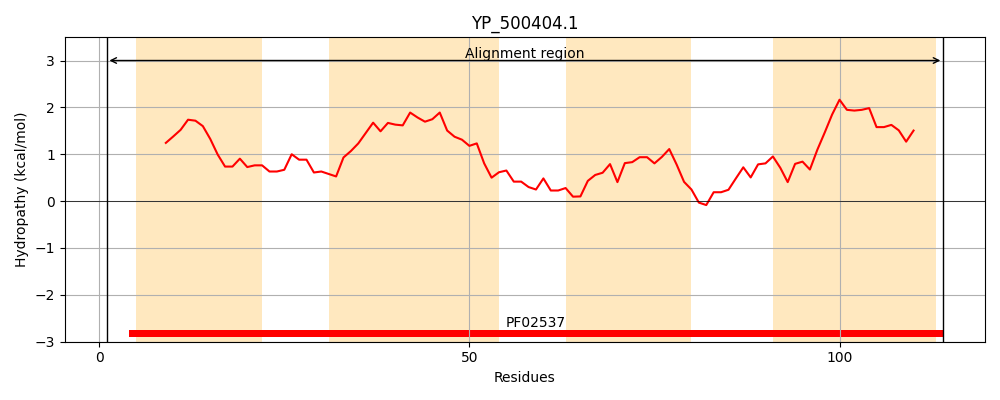
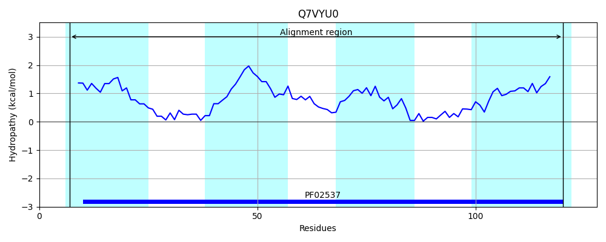
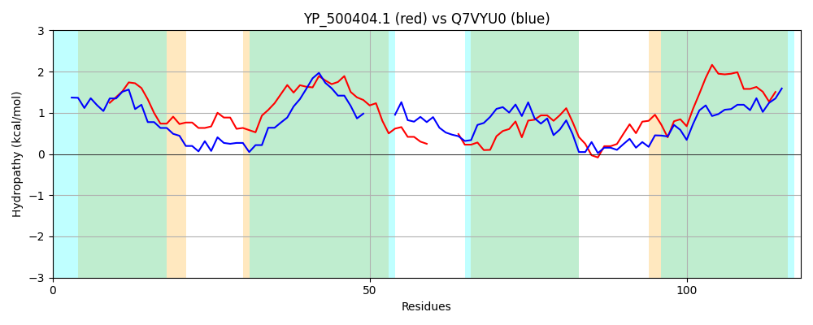

Hit Accession: Q7VYU0
Hit TCID: 1.A.43.1.17
Hit Description: gnl|BL_ORD_ID|15621 gnl|TC-DB|Q7VYU0|1.A.43.1.17 Putative fluoride ion transporter CrcB OS=Bordetella pertussis (strain Tohama I / ATCC BAA-589 / NCTC 13251) GN=crcB PE=1 SV=1
Mach Len: 118
e:0.000000
Query TMS Count : 4
Hit TMS Count: 4
TMS-Overlap Score: 3.700000
Predicted Substrates:CHEBI:49593;fluoride
BLAST Alignment:
| Protein Hydropathy Plots: | |
|---|---|
|  |  |
Pairwise Alignment-Hydropathy Plot: | |
|  | |